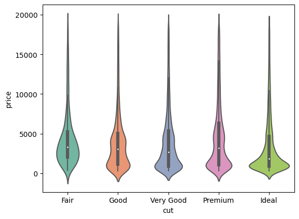
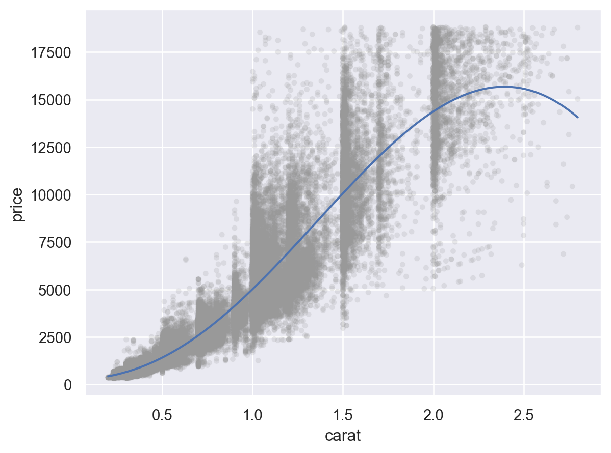
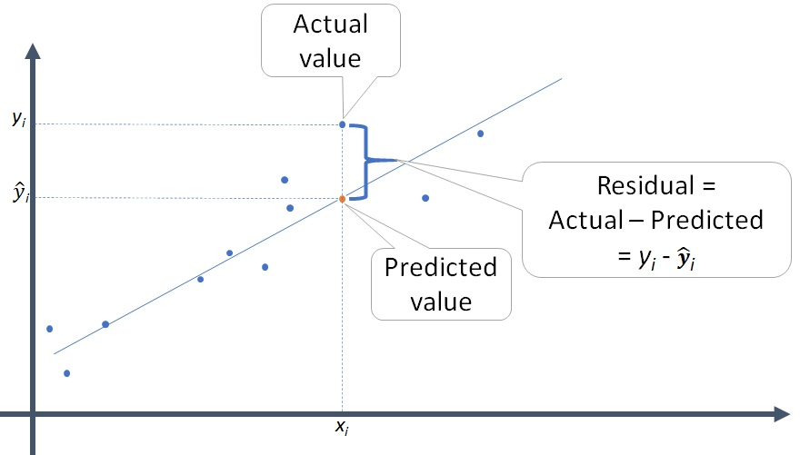
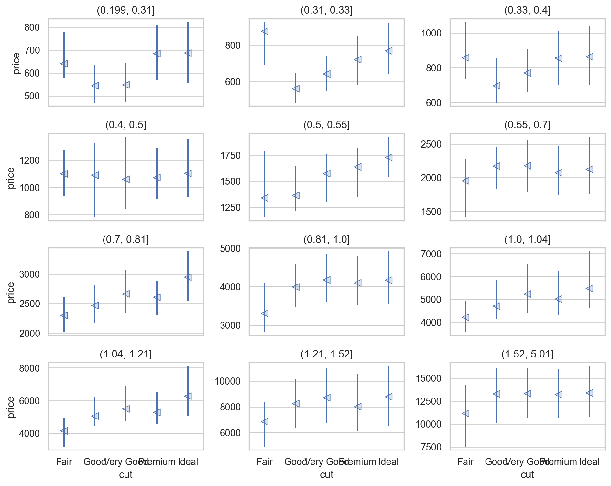

Load Packages
# numerical calculation & data frames
import numpy as np
import pandas as pd
# visualization
import matplotlib.pyplot as plt
import seaborn as sns
import seaborn.objects as so
# statistics
import statsmodels.api as smR for Data Science by Wickham & Grolemund
# numerical calculation & data frames
import numpy as np
import pandas as pd
# visualization
import matplotlib.pyplot as plt
import seaborn as sns
import seaborn.objects as so
# statistics
import statsmodels.api as sm# pandas options
pd.set_option("mode.copy_on_write", True)
pd.options.display.precision = 2
pd.options.display.float_format = '{:.2f}'.format # pd.reset_option('display.float_format')
pd.options.display.max_rows = 7
# Numpy options
np.set_printoptions(precision = 2, suppress=True)
source: R for Data Science
Visualising, transforming, modelling을 통해 질문들을 개선하거나 새로운 질문들을 생성하면서 데이터에 대한 이해를 늘리면서 질문들에 답을 구하는 반복순환 과정
크게 다음 2가지 타입의 질문을 기본으로 시작
# import a dataset
diamonds_data = sm.datasets.get_rdataset("diamonds", "ggplot2")
diamonds = diamonds_data.dataprint(diamonds_data.__doc__)diamonds carat cut color clarity depth table price x y z
0 0.23 Ideal E SI2 61.50 55.00 326 3.95 3.98 2.43
1 0.21 Premium E SI1 59.80 61.00 326 3.89 3.84 2.31
2 0.23 Good E VS1 56.90 65.00 327 4.05 4.07 2.31
... ... ... ... ... ... ... ... ... ... ...
53937 0.70 Very Good D SI1 62.80 60.00 2757 5.66 5.68 3.56
53938 0.86 Premium H SI2 61.00 58.00 2757 6.15 6.12 3.74
53939 0.75 Ideal D SI2 62.20 55.00 2757 5.83 5.87 3.64
[53940 rows x 10 columns]# cut, color, clarity 모두 categorical type으로 변형
diamonds["cut"] = pd.Categorical(
diamonds["cut"],
categories=["Fair", "Good", "Very Good", "Premium", "Ideal"],
ordered=True
)
diamonds["color"] = pd.Categorical(
diamonds["color"],
categories=["D", "E", "F", "G", "H", "I", "J"],
ordered=True
)
diamonds["clarity"] = pd.Categorical(
diamonds["clarity"],
categories=["I1", "SI2", "SI1", "VS2", "VS1", "VVS2", "VVS1", "IF"],
ordered=True
)variability, variance..
먼저 diamonds 데이터에서 54,000개 정도되는 다이아몬드의 무게(캐럿, carat)의 분포를 다이어그램으로 살펴보는 것으로 시작하면,
so.Plot(diamonds, x="carat").add(so.Bars(), so.Hist(binwidth=.5))# Zoom-in
(
so.Plot(diamonds, x="carat")
.add(so.Bars(), so.Hist(binwidth=.01))
.limit(y=(0, 50))
)극단값들을 제거하고 확대해서 살펴보면
(
so.Plot(diamonds.query('carat < 3'), x="carat")
.add(so.Bars(), so.Hist(binwidth=.01))
)다음과 같은 질문들을 해볼 수 있음
군집을 이루는 패턴에 대해서는,
위의 질문들은 변수들간의 관계를 탐색하도록 이끌며, 이는 다음 공변량(covariation)에서 다룰 것임.
Diamonds 치수(x, y, z) 중 y(width in mm)값

left = so.Plot(diamonds, x="y").add(so.Bars(), so.Hist(binwidth=.5))
right = so.Plot(diamonds, x="y").add(so.Bars(), so.Hist(binwidth=.5)).limit(y=(0, 30))pd.options.display.max_rows = 0
unusual = (
diamonds[["price", "x", "y", "z"]]
.query('y < 3 | y > 20')
.sort_values("y")
)
unusual price x y z
11963 5139 0.00 0.00 0.00
15951 6381 0.00 0.00 0.00
24520 12800 0.00 0.00 0.00
26243 15686 0.00 0.00 0.00
27429 18034 0.00 0.00 0.00
49556 2130 0.00 0.00 0.00
49557 2130 0.00 0.00 0.00
49189 2075 5.15 31.80 5.12
24067 12210 8.09 58.90 8.06x, y, and z variables in diamonds. What do you learn?price. Do you discover anything unusual or surprising? (Hint: Carefully think about the binwidth and make sure you try a wide range of values.)특이값을 missing (NA)으로 처리할 때는 신중하게…
특이한 값들이 있는 행을 다 제거하도록 방식을 금물!
예를 들어, diamonds.query('y >= 3 & y <= 20')
만약 NA로 바꾸기로 했다면, subsetting, .assign(), np.where(), .mask()를 활용
diamonds2 = diamonds.assign(
y = lambda dia: np.where((dia.y < 3) | (dia.y > 20), np.nan, dia.y)
).mask()
diamonds2 = diamonds.copy()
diamonds2["y"].mask((diamonds2.y < 3) | (diamonds2.y > 20), np.nan, inplace=True)# NA의 제거에 대해 경고 없음!
(
so.Plot(diamonds2, x="x", y="y")
.add(so.Dots(alpha=1))
)결측치들을 포함한 경우와 제거한 경우를 비교해 보고자 할 때,
flights = sm.datasets.get_rdataset("flights", "nycflights13").dataflights = flights.assign(
cancelled = lambda x: x.dep_time.isna(), # True/False
sched_hour = lambda x: x.sched_dep_time // 100,
sched_min = lambda x: x.sched_dep_time % 100,
sched_dep_time = lambda x: x.sched_hour + x.sched_min / 60
)(
so.Plot(flights, x="sched_dep_time", color="cancelled")
.add(so.Line(), so.Hist(binwidth=1/4))
)
(
so.Plot(diamonds, x="price", color="cut")
.add(so.Line(), so.Hist(binwidth=500))
)# 각 cut 내에서의 분포가 cut마다 어떻게 다른가 확인
(
so.Plot(diamonds, x="price", color="cut")
.add(so.Line(), so.Hist(binwidth=500, stat="density"))
)Q: 왜 fair 컷의 평균 가격이 가장 높은가???
sns.boxplot(diamonds, x="cut", y="price", palette="Set2")
plt.show() # 생략
# Custom function
import sbcustom as sbc
sbc.rangeplot(diamonds, x="cut", y="price")# Violin plot
sns.violinplot(diamonds, x="cut", y="price", palette="Set2")
plt.show() # 생략다이아몬드 컷의 질이 낮을수록 평균 가격이 높은, 직관적으로 반대되는 패턴을 보임.
한편, 카테고리의 순서가 존재하지 않는 경우: 의미있는 순서로 재정렬하여 패턴 파악을 용이하게 할 수 있음
예를 들어,
mpg = sm.datasets.get_rdataset("mpg", "ggplot2").datahwy_order = mpg.groupby("class")[["hwy"]].median().sort_values("hwy").index
sns.boxplot(mpg, y="class", x="hwy", order=hwy_order, palette="Set2")
plt.show()
(
so.Plot(diamonds, x="price", color="cut")
.add(so.Line(), so.Hist(binwidth=500, stat="density"))
)(
so.Plot(diamonds, x="price", color="cut")
.add(so.Bars(), so.Hist(binwidth=500, stat="density"))
.facet("cut")
)table_cut = diamonds.groupby(["cut", "color"]).size().reset_index(name="n")
table_cut cut color n
0 Fair D 163
1 Fair E 224
2 Fair F 312
.. ... ... ...
32 Ideal H 3115
33 Ideal I 2093
34 Ideal J 896
[35 rows x 3 columns](
so.Plot(table_cut, x="cut", y="color", pointsize="n", color="n")
.add(so.Dot())
.scale(pointsize=(5, 30))
)순서가 없는 범주형 변수인 경우, 행과 열을 유사한 정도에 따라 순서를 매기는 알고리즘을 통해 재정렬하여 패턴을 볼 수도 있음
gapminder = sm.datasets.get_rdataset("gapminder", "gapminder").data
gapminder country continent year lifeExp pop gdpPercap
0 Afghanistan Asia 1952 28.80 8425333 779.45
1 Afghanistan Asia 1957 30.33 9240934 820.85
2 Afghanistan Asia 1962 32.00 10267083 853.10
... ... ... ... ... ... ...
1701 Zimbabwe Africa 1997 46.81 11404948 792.45
1702 Zimbabwe Africa 2002 39.99 11926563 672.04
1703 Zimbabwe Africa 2007 43.49 12311143 469.71
[1704 rows x 6 columns]plotdata = (
gapminder
.query('continent == "Asia"')
.pivot(index="country", columns="year", values="lifeExp")
)
plotdatayear 1952 1957 1962 1967 1972 1977 1982 1987 1992 \
country
Afghanistan 28.80 30.33 32.00 34.02 36.09 38.44 39.85 40.82 41.67
Bahrain 50.94 53.83 56.92 59.92 63.30 65.59 69.05 70.75 72.60
Bangladesh 37.48 39.35 41.22 43.45 45.25 46.92 50.01 52.82 56.02
... ... ... ... ... ... ... ... ... ...
Vietnam 40.41 42.89 45.36 47.84 50.25 55.76 58.82 62.82 67.66
West Bank and Gaza 43.16 45.67 48.13 51.63 56.53 60.77 64.41 67.05 69.72
Yemen, Rep. 32.55 33.97 35.18 36.98 39.85 44.17 49.11 52.92 55.60
year 1997 2002 2007
country
Afghanistan 41.76 42.13 43.83
Bahrain 73.92 74.80 75.64
Bangladesh 59.41 62.01 64.06
... ... ... ...
Vietnam 70.67 73.02 74.25
West Bank and Gaza 71.10 72.37 73.42
Yemen, Rep. 58.02 60.31 62.70
[33 rows x 12 columns]# hierarchical clustering in scipy
sns.clustermap(plotdata, col_cluster=False, method="ward")<seaborn.matrix.ClusterGrid at 0x13ad22450>groupby(["month", "dest"])로 그룹핑을 해서 시작해 볼 것sns.clustermap()도 그려볼 것pd.cut(), pd.qcut()(
so.Plot(diamonds.query('carat < 3'), x="carat", y="price")
.add(so.Dots(alpha=1/100))
.add(so.Line(color="orangered"), so.PolyFit(5))
)
2d-histogram: x, y축 모두 binning
sns.histplot(diamonds, x="carat", y="price", bins=20)
plt.show()Discretize: 연속 변수를 카테고리화
diamonds_cat = diamonds.query("carat < 3").assign(
carat_cat=lambda x: pd.cut(x.carat, 20, labels=False),
carat_qcat=lambda x: pd.qcut(x.carat, 20, labels=False),
)sns.boxplot(diamonds_cat, x="carat_cat", y="price")<Axes: xlabel='carat_cat', ylabel='price'>sns.boxplot(diamonds_cat, x="carat_qcat", y="price")<Axes: xlabel='carat_qcat', ylabel='price'>(
so.Plot(diamonds_cat, x="carat_cat", y="price")
.add(so.Range(), so.Est("median", errorbar=("pi", 50)))
.add(so.Dots(pointsize=8, marker="<"), so.Agg("median"))
)x and y values, which makes the points outliers even though their x and y values appear normal when examined separately.(
so.Plot(diamonds, x='x', y='y')
.add(so.Dots())
.limit(x=(4, 11), y=(4, 11))
)패턴을 발견했다면 다음과 같은 질문을 해 볼 것
eruption duration (mins) vs.
wait time (mins) between eruptions
faithful = sm.datasets.get_rdataset("faithfuld", "ggplot2").datafaithful["waiting_cat"] = pd.cut(faithful["waiting"], 10)faithful.groupby("waiting_cat")["eruptions"].mean()waiting_cat
(42.947, 48.3] 3.35
(48.3, 53.6] 3.35
(53.6, 58.9] 3.35
...
(80.1, 85.4] 3.35
(85.4, 90.7] 3.35
(90.7, 96.0] 3.35
Name: eruptions, Length: 10, dtype: float64(
so.Plot(faithful, x='eruptions', y='waiting', color="density")
.add(so.Dot())
.add(so.Line(), so.PolyFit(5), color=None)
)
패턴:
If you think of variation as a phenomenon that creates uncertainty, covariation is a phenomenon that reduces it. If two variables covary, you can use the values of one variable to make better predictions about the values of the second. If the covariation is due to a causal relationship (a special case), then you can use the value of one variable to control the value of the second.
패턴이 보이면, 이를 구체적으로 명시하는 모델을 세워 분석을 진행
컷(cut)과 가격(price)의 관계는 예상과 달랐는데, 이는 컷(cut)과 무게(carat), 무게(carat)와 가격(price) 사이에 깊은 관계가 있었기 때문임.
모델링을 통해 가격(price)과 크기(carat) 사이의 강한 관계를 제거할 수 있도록 모델을 세울 수 있음
이 관계를 제거한 후 남은 패턴을 탐색할 수 있음
Build a model!

import statsmodels.formula.api as smf
diamonds2 = diamonds.assign(
log_carat = np.log(diamonds.carat),
log_price = np.log(diamonds.price)
)
diamonds_fit = smf.ols('log_price ~ log_carat', data=diamonds2).fit()
diamonds2 = diamonds2.assign(
log_pred = diamonds_fit.fittedvalues,
log_resid = diamonds_fit.resid,
pred = lambda x: np.exp(x.log_pred),
resid = lambda x: np.exp(x.log_resid),
resid_diff = lambda x: x.price - x.pred
)
diamonds2[["cut", "carat", "price", "pred", "resid", "resid_diff"]] cut carat price pred resid resid_diff
0 Ideal 0.23 326 397.72 0.82 -71.72
1 Premium 0.21 326 341.48 0.95 -15.48
2 Good 0.23 327 397.72 0.82 -70.72
... ... ... ... ... ... ...
53937 Very Good 0.70 2757 2568.14 1.07 188.86
53938 Premium 0.86 2757 3626.09 0.76 -869.09
53939 Ideal 0.75 2757 2882.92 0.96 -125.92
[53940 rows x 6 columns]print(diamonds_fit.summary()) OLS Regression Results
==============================================================================
Dep. Variable: log_price R-squared: 0.933
Model: OLS Adj. R-squared: 0.933
Method: Least Squares F-statistic: 7.510e+05
Date: Fri, 31 Mar 2023 Prob (F-statistic): 0.00
Time: 21:47:53 Log-Likelihood: -4424.2
No. Observations: 53940 AIC: 8852.
Df Residuals: 53938 BIC: 8870.
Df Model: 1
Covariance Type: nonrobust
==============================================================================
coef std err t P>|t| [0.025 0.975]
------------------------------------------------------------------------------
Intercept 8.4487 0.001 6190.896 0.000 8.446 8.451
log_carat 1.6758 0.002 866.590 0.000 1.672 1.680
==============================================================================
Omnibus: 877.676 Durbin-Watson: 1.227
Prob(Omnibus): 0.000 Jarque-Bera (JB): 1679.882
Skew: 0.072 Prob(JB): 0.00
Kurtosis: 3.853 Cond. No. 2.08
==============================================================================
Notes:
[1] Standard Errors assume that the covariance matrix of the errors is correctly specified.# import sklearn regression models
from sklearn.linear_model import LinearRegression
# create linear model where x is log_carat and y is log_price
lm = LinearRegression()
lm.fit(diamonds2[["log_carat"]], diamonds2[["log_price"]])
# show coefficients
print(lm.coef_)
# print intercept
print(lm.intercept_)
# print R-squared
print(lm.score(diamonds2[["log_carat"]], diamonds2[["log_price"]]))[[1.68]]
[8.45]
0.9329893079520857hline = pd.DataFrame({"x": [0, 5], "y": [1, 1]})
(
so.Plot(diamonds2, x='carat', y='resid')
.add(so.Dots())
.add(so.Line(linestyle=":", color="red"), x=hline.x, y=hline.y)
)
hline = pd.DataFrame({"x": [-1.5, 1.5], "y": [0, 0]})
(
so.Plot(diamonds2, x='log_carat', y='log_resid')
.add(so.Dots())
.add(so.Line(linestyle=":", color="red"), x=hline.x, y=hline.y)
)캐럿(carat)으로 설명되지 않는 가격의 variation들로만 추가 분석을 실시하면,
즉, cut이 이 설명되지 못하는 부분을 얼마나 추가로 설명할 수 있는가?
hline = pd.DataFrame({"x": diamonds2["cut"].value_counts().index.array, "y": [1, 1, 1, 1, 1]})
(
so.Plot(diamonds2, x='cut', y='resid')
.add(so.Range(), so.Est("median", errorbar=("pi", 50)))
.add(so.Dot(marker="<", pointsize=8), so.Agg("median"))
.add(so.Line(linestyle=":", color="red"), x=hline.x, y=hline.y)
)diamonds2["carat_cat"] = pd.qcut(diamonds2["carat"], 12)
(
so.Plot(diamonds2, x='cut', y='price')
.add(so.Range(), so.Est("median", errorbar=("pi", 50)))
.add(so.Dot(marker="<", pointsize=5), so.Agg("median"))
.facet("carat_cat", wrap=3)
.share(y=False)
.layout(size=(10, 8))
)Data on houses in Saratoga County, New York, USA in 2006
더 큰 데이터셋은 다음을 참고: The Ames Housing dataset in Kaggle
houses_data = sm.datasets.get_rdataset("SaratogaHouses", "mosaicData")
houses = houses_data.data # data
# print(houses_data.__doc__) # documents
houses price lotSize age landValue livingArea pctCollege bedrooms \
0 132500 0.09 42 50000 906 35 2
1 181115 0.92 0 22300 1953 51 3
2 109000 0.19 133 7300 1944 51 4
... ... ... ... ... ... ... ...
1725 194900 0.39 9 20400 1099 51 2
1726 125000 0.24 48 16800 1225 51 3
1727 111300 0.59 86 26000 1959 51 3
fireplaces bathrooms rooms heating fuel \
0 1 1.00 5 electric electric
1 0 2.50 6 hot water/steam gas
2 1 1.00 8 hot water/steam gas
... ... ... ... ... ...
1725 0 1.00 3 hot air gas
1726 1 1.00 7 hot air gas
1727 0 1.00 6 hot air gas
sewer waterfront newConstruction centralAir
0 septic No No No
1 septic No No No
2 public/commercial No No No
... ... ... ... ...
1725 public/commercial No No No
1726 public/commercial No No No
1727 septic No No No
[1728 rows x 16 columns]위 데이터를 이용하여, 이 단원에서 다룬 탐색적 분석을 연습
Variation: Categorical variables
Covariation: A categorical and continuous variable
Covariation: Two continuous variables
livingArea??다음 코드를 이용하여, living area가 설명하지 못하는 price의 variation (resid)를 다른 변수들이 얼마나 예측가능한지 살펴보세요. 예를 들어,
import statsmodels.formula.api as smf
houses_fit = smf.ols('price ~ livingArea', data = houses).fit()
houses = houses.assign(
pred = houses_fit.predict(),
resid = lambda x: x.price - x.pred
)def boxplot(df, x, y, color=None, alpha=0.1):
return (
so.Plot(df, x=x, y=y, color=color)
.add(so.Dots(alpha=alpha, color=".8"), so.Jitter(), so.Dodge())
.add(so.Range(), so.Est("median", errorbar=("pi", 50)), so.Dodge())
.add(so.Dots(pointsize=8, marker="<"), so.Agg("median"), so.Dodge())
.scale(color="Dark2")
.theme({**sns.axes_style("whitegrid")})
)boxplot(houses, x="centralAir", y="price", color="heating")boxplot(houses, x="centralAir", y="resid", color="heating").limit(y=(-200000, 200000))